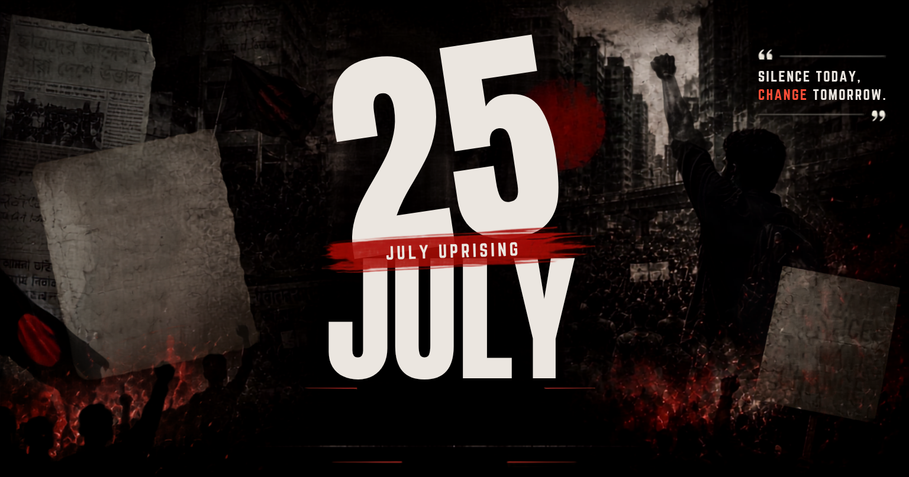

ISTIACK'S JULY CORNER
Read in Bangla
ISTIACK'S JULY CORNER
Read in Bangla

Share Link
Download / Print
July 25, 2024
Print Options
Select the language you want to print.
English Only
Bangla Only
Print Both Languages
Link copied to clipboard!